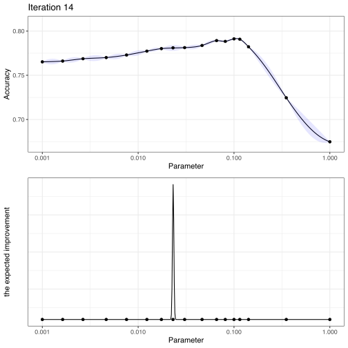

Acquisition Functions
acquisition_functions.RmdAcquisition functions are mathematical techniques that guide how the parameter space should be explored. These are functions of the predicted mean and variance generated by the Gaussian process model. For a set of such predictions on a set of candidate parameter sets, an acquisition functions weights the means and variances to direct the search.
The variance term that is generated by the Gaussian process model usually reflects the spatial aspects of the data. Candidate sets with high variance are not near any existing parameter values (i.e. those that have observed performance estimates). The predicted variance is very close to zero when at or very near to an existing result.
There is usually a trade-off between two strategies:
exploitation focuses on results at or near to the current best results by penalizing for higher variance values.
exploration pushes the search towards unexplored regions.
The acquisition functions themselves have quasi-tuning parameters that are usually trade-offs between exploitation and exploration. For example, if the performance measure being used should be maximized (i.e. accuracy, the area under the ROC curve, etc), then one acquisition function would be a lower confidence bound \(L = \mu - C \times \sigma\). The multiplier \(C\) would be used to penalize based on the predicted standard error (\(\sigma\)) of different parameter combinations. Note that the acquisition function is not the performance measure, but a funtion of what metric is used to evaluate the model.
One of the most common acquisition functions is the expected improvement. Based on basic probability theory, this can be computed relative to the current estimate of the optimal performance (\(\hat{f}_{opt}\)). For a arbitrary parameter value \(\theta\) with predicted mean \(\mu\) and standard error \(\sigma\), the expected improvement is determined using:
Suppose a single parameter were being optimized and that parameter was represented using a log10 transformation. Using resampling, suppose the accuracy results for three points were evaluated:

In the first iteration of Bayesian optimization, these three data points are given to the Gaussian process model to produce predictions across a wider range of values. The fitted curve is shown on the top panel below along with approximate 95% credible intervals:

The bottom panel is shows the expected improvement for this range of candidate values. Notice that, for this acquisition function, there is no predicted improvement near the existing points and the three regions that show promise are associated with higher variance but moderate to high predicted accuracies. The region to the right of the highest value are not shown to be promising due to the low predicted mean accuracy.
Using these results, the parameter value with the largest improvement is then evaluated using cross-validation. The GP model is then updated and a new parameter is chosen and so on.
The results at iteration 14 are:

The points shown on the graph indicate that there is a region slightly less than a value of 0.01 that appears to produce the best results.
When using expected improvement, the primary method for compromising between exploitation and exploration is the use of a “trade-off” value. This value is the amount of performance (in the original units) that can be sacrificed when computing the improvement. This has the effect of down-playing the contribution of the mean effect in the computations. For a trade-off value \(\epsilon\), the math becomes:
Suppose that we were willing to trade-off 1% of the predicted accuracy during the search? Using the same three initial results, the search would end up in the same general location but would have explored more values to the left of the predicted optimum:

There are two main strategies for dynamic trade-offs during the optimization:
Use a function to specify the parameter(s) for the acquisition functions. For expected improvement, this can be done using
exp_improve(trade_off = foo()).foo()should be a function whose first parameter is the current iteration number. Whentuneinvokes this function, only the first argument is used. A good strategy might be to settrade_off = 0at the start of the search and increase it towards the end.Bayes_control()has an option for doing an additional uncertainty sample when no improvements have been found. This is a technique from the active learning literature where new data points are sampled that most help the model. In this case, the candidate points are scored only on variance and a candidate is chosen from a set of the most variable design points. This may find a location in the parameter space to help the optimization make improvements.